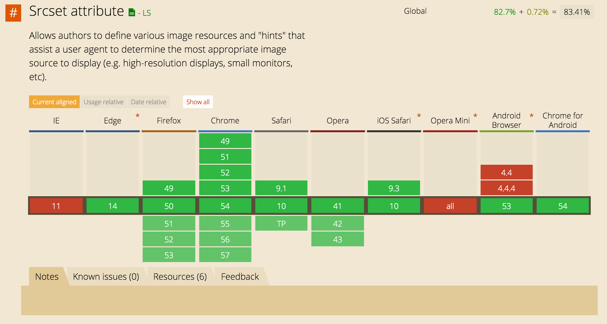

Responsive images & post thumbnails
WordPress has included responsive images support since version 4.4.
srcset is pretty safe to use as it is widely compatible with most browsers, but you can also add Picturefill as a srcset polyfill if your site requires it.

In the last chapter we went over adding custom image sizes in app/setup.php:
add_theme_support('post-thumbnails');
add_image_size('post-featured', 1280, 800, true);
Simplest usage
The simplest usage of including your featured images is by calling the_post_thumbnail('post-featured') in your template:
<!-- @ resources/views/partials/content-single.blade.php -->
<article @php post_class() @endphp>
<header>
{!! the_post_thumbnail('blog-featured') !!}
<h1 class="entry-title">{{ get_the_title() }}</h1>
@include('partials/entry-meta')
</header>
The default output looks like:
<article class="post-1016 post type-post status-publish format-standard has-post-thumbnail hentry">
<header>
<img width="1280" height="800" src="/app/uploads/2013/03/Example-1280x800.jpg" class="attachment-post-featured size-post-featured wp-post-image" alt="Isles" srcset="/app/uploads/2013/03/Example-1280x800.jpg 1280w, /app/uploads/2013/03/Example-300x188.jpg 300w, /app/uploads/2013/03/Example-768x480.jpg 768w, /app/uploads/2013/03/Example-1024x640.jpg 1024w" sizes="(max-width: 1280px) 100vw, 1280px">
<h1 class="entry-title">Example Post</h1>
<time>...</time>
<p class="byline author vcard">By <a href="https://bedrock.test/author/ben/" rel="author" class="fn">Ben Word</a></p>
</header>
If you only required the src URL of the image to use in a different way, such as an inline background-image, you would use:
wp_get_attachment_url(get_post_thumbnail_id(get_the_ID()));
This will return the URL of the original image uploaded. If you want to get the URL for a specific thumbnail size, it requires a little bit more code:
// @ app/controllers/single.php
namespace App;
use Sober\Controller\Controller;
class Single extends Controller
{
public function img_url() {
return wp_get_attachment_image_src(get_post_thumbnail_id(), 'large', true);
}
}
// @ app/filters.php (if not using Controller)
add_filter('sage/template/single/data', function (array $data) {
$data['img_url'] = wp_get_attachment_image_src(get_post_thumbnail_id(), 'large', true);
return $data;
});
<article @php post_class() @endphp>
<header style="background-image: url({{ $img_url[0] }});">
Customizing the output
The srcset and sizes attributes can be customized with the wp_get_attachment_image_attributes filter, and conditional tags make it easy to customize these attributes based on which type of page you're on.
Twenty Seventeen and Twenty Sixteen both have some examples you can reference.
See the resources chapter for articles on srcset, sizes, and responsive images in WordPress.
Recommended approaches
Imgix
If your site has a large media library you probably already want to offload the assets to a CDN. How about taking it a step further and integrating Imgix?
The Media Cloud WordPress plugin comes with Imgix integration for real-time image processing and automatic format delivery.
Imgix is a content delivery network with a twist. In addition to distributing your media, it also allows you to edit them, in real-time, and deliver the edited version through their CDN without altering the original. Want to add a new image size to your theme? You can do this with Imgix without having to use a plugin to recut all of your existing media to this new size. Imgix optimizes format delivery and a bunch of other things.
Disabling responsive images
You might want to disable WordPress responsive images if you choose to implement responsive images entirely with your own markup.
The easiest way to disable WP core's responsive images is with:
add_filter('wp_calculate_image_srcset_meta', '__return_null');
The markup from above then turns into:
<img width="1280" height="800" src="/app/uploads/2013/03/Example-1280x800.jpg" class="attachment-post-featured size-post-featured wp-post-image" alt="Example">
alwaysblank's $image array approach with the Fly Dynamic Image Resizer plugin is an alternate approach for when you're not offloading your media library and/or Imgix isn't in the budget.
- You either define an image size in your code using the fly_add_image_size() function, or directly call the image size in the code
- The admin uploads the image in the media library, but the fly dynamic images are not created
- The user visits the page for the first time, and the image is dynamically created and is stored
- The user visits the page again for the second time, and the stored version of the image is served